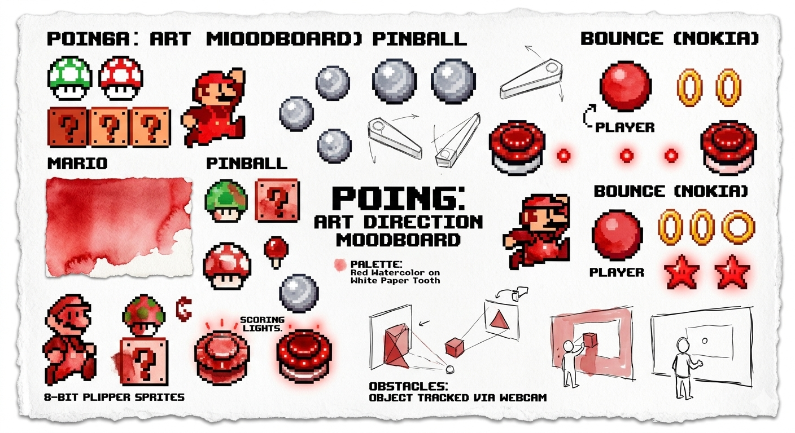
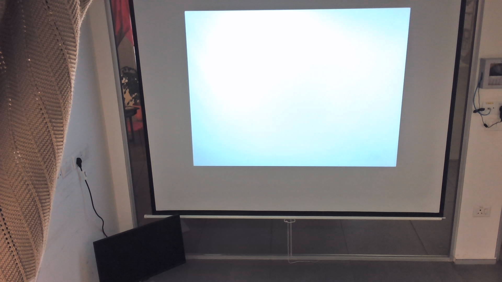
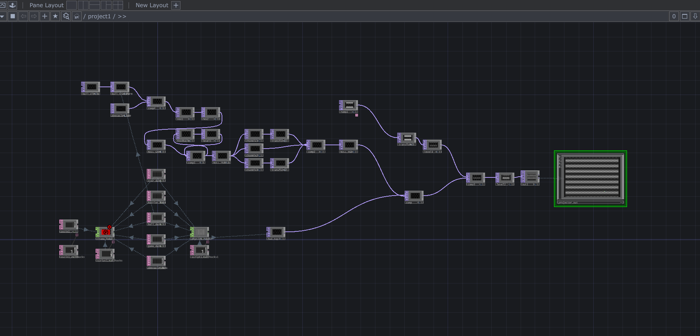
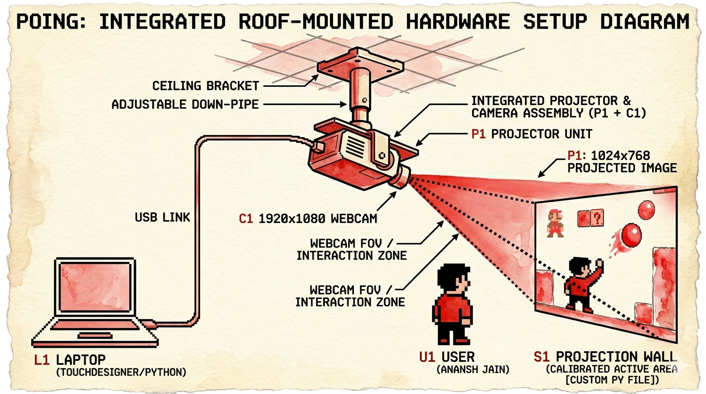
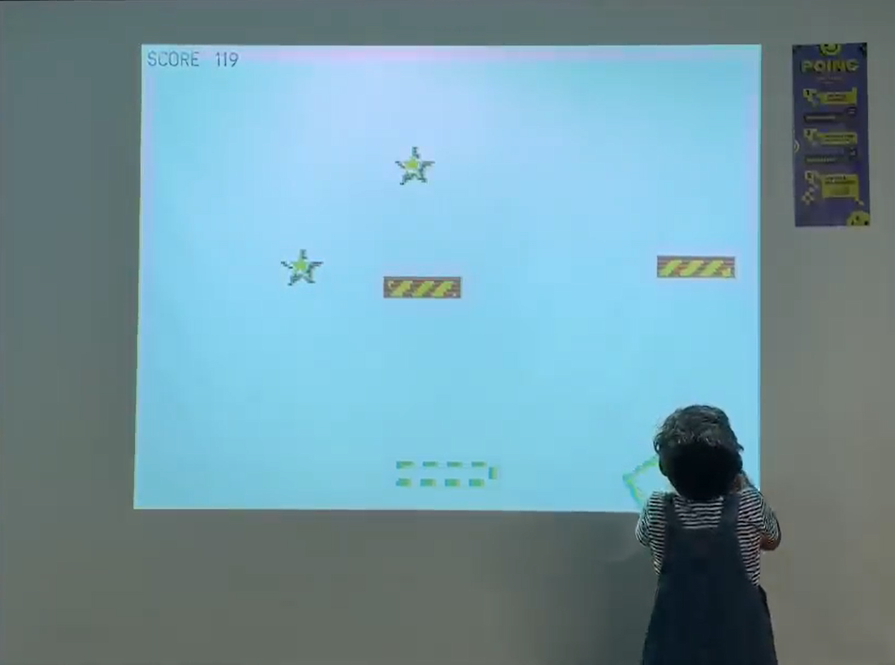

INSERT COIN TO CONTINUE
PLAYER 1: Anansh Jain
STAGE: Poing
WEAPONS: TouchDesigner, Python, CV
SAVE DATE: 24-04-2026
Poing is an interactive projection-mapped game that bridges the physical and digital worlds. By leveraging TouchDesigner for real-time visual rendering and Python for complex game logic, the installation transforms a standard physical surface into a dynamic, responsive playground. This document outlines the conceptualization, artistic direction, technical pipeline, and iterative development of the project.
The initial goal was to create a tangible, communal gaming experience where users interact using their bodies or physical objects rather than traditional controllers.
A major pillar of this project was breaking away from the standard "digital" aesthetic often seen in interactive installations.
The visual language was strictly defined to evoke a highly tactile, physical feel. All digital assets were designed to match a specific style:

The backend of the installation relies on a seamless pipeline between physical sensors, TouchDesigner's real-time engine, and custom Python scripts.

The TouchDesigner network was organized into distinct, modular components (COMPs):

The first major hurdle was getting reliable input. We started by bringing the camera feed into TouchDesigner and using a Blob Track TOP (or optical flow) to find the user's position.
CHOP Execute DATs were used to smooth the tracking data, preventing the interactive elements from "jittering" on screen.While TouchDesigner is great for visuals, complex state-machines required custom scripting.
Text DAT housed the GameManager Python class.Bringing the "Red Watercolor on Handmade Paper" look to life required a mix of 2D assets and post-processing in TouchDesigner:
Displace TOPs and Noise TOPs in TouchDesigner to give dynamic, real-time assets slightly wobbly, organic edges mimicking wet paint.Over TOP or Multiply TOP at the very end of the render chain.Once the game was running locally, it was time to map it to the physical world.


Poing successfully proved that interactive installations don't have to look coldly digital. By combining robust Python logic with TouchDesigner's visual power, we created a living, red watercolor painting that responds to human touch.
PROCESS BOOK COMPILED ON 24-04-2026.
VISIT ANANSH.FRAMER.WEBSITE FOR VIDEO DOCUMENTATION.